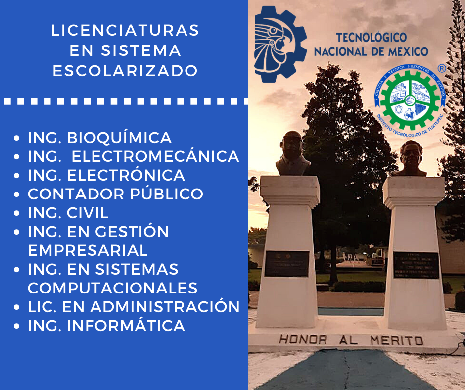
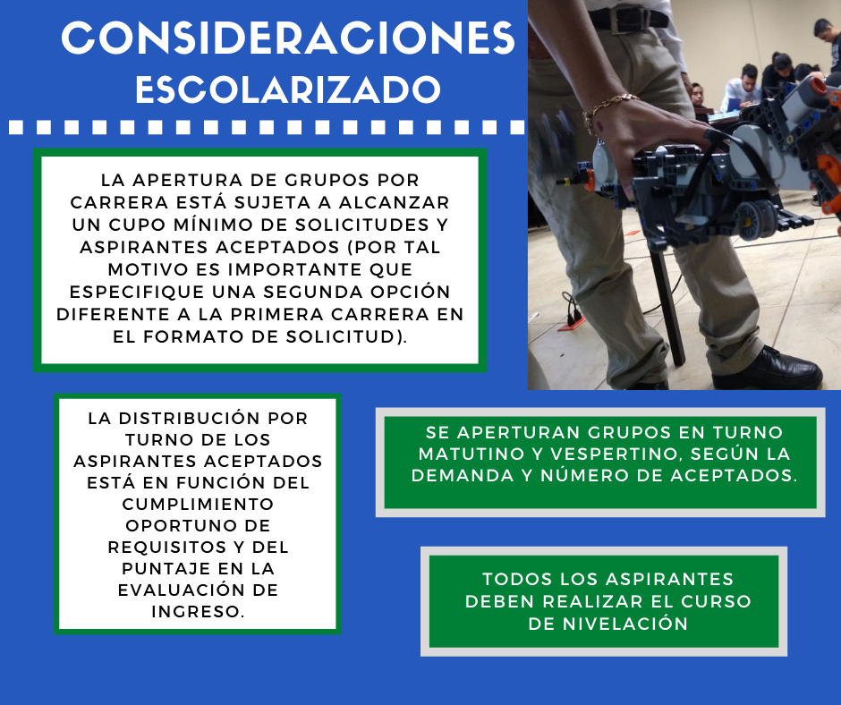
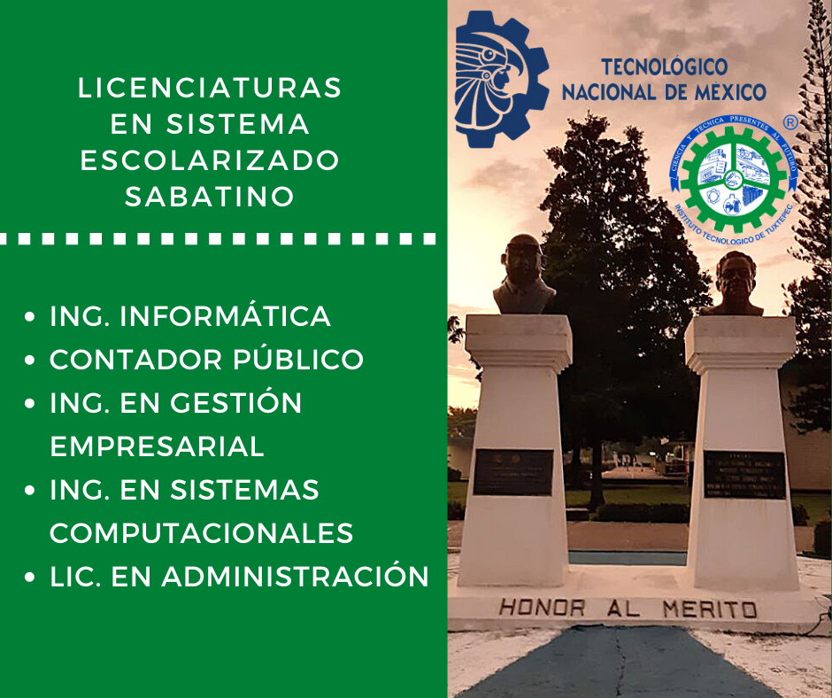
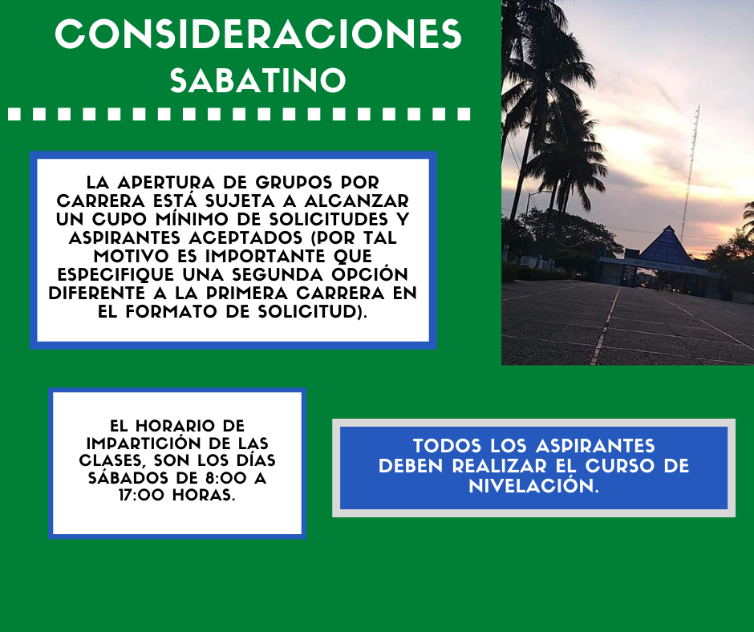
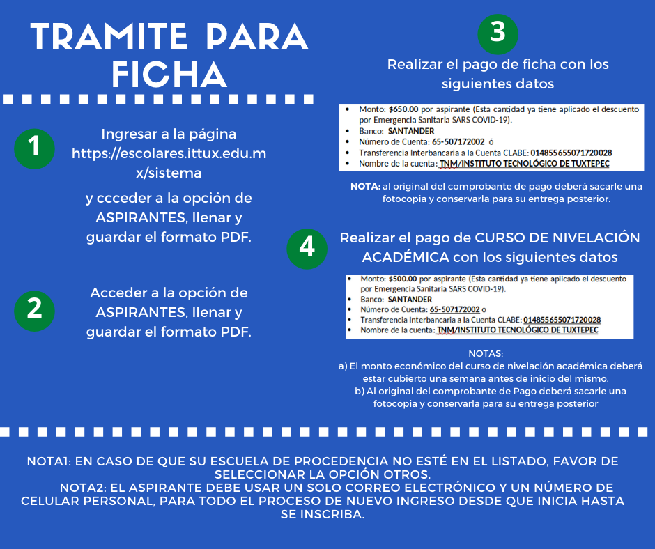
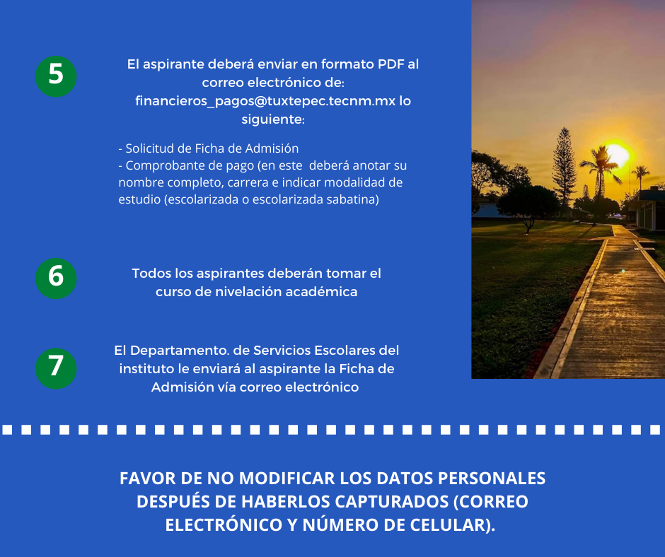
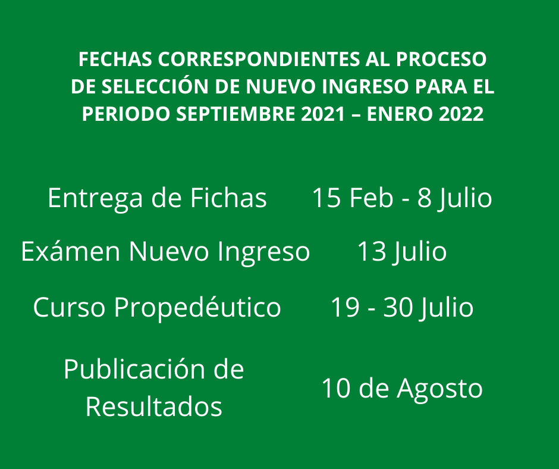
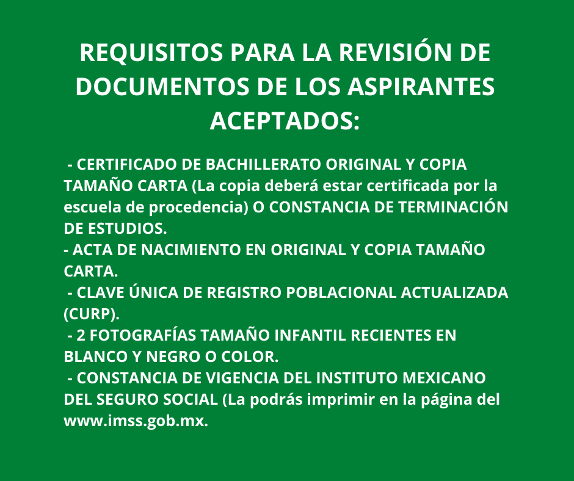
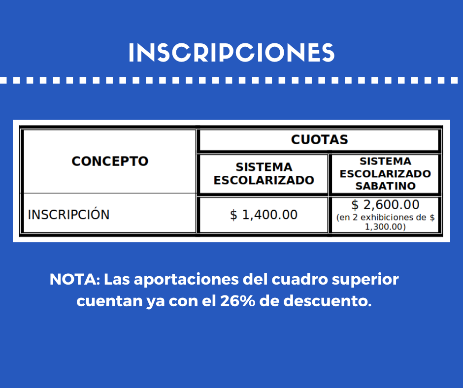

TecNM CAMPUS TUXTEPEC
Orgullosamente Tec


Procedimiento para nuevo ingreso
Ingenierías
Sistemas computacionales
Electrómecanica
Informática
Bioquímica
Civil
Gestión empresarial
Electrónica
Licenciaturas
Administración
Contador público
¡Nosotros somos tu mejor opción!
Proceso para obtención de ficha-Nuevo ingreso 2021